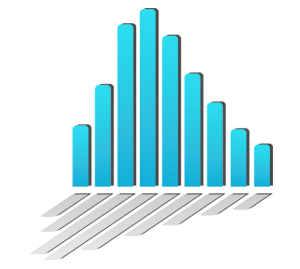
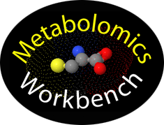
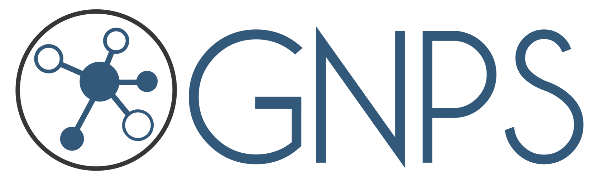
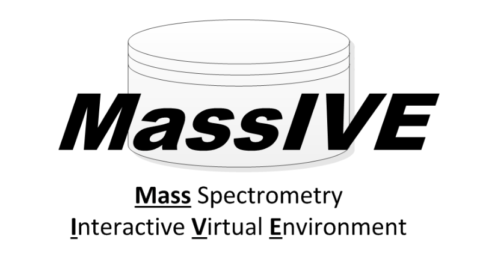
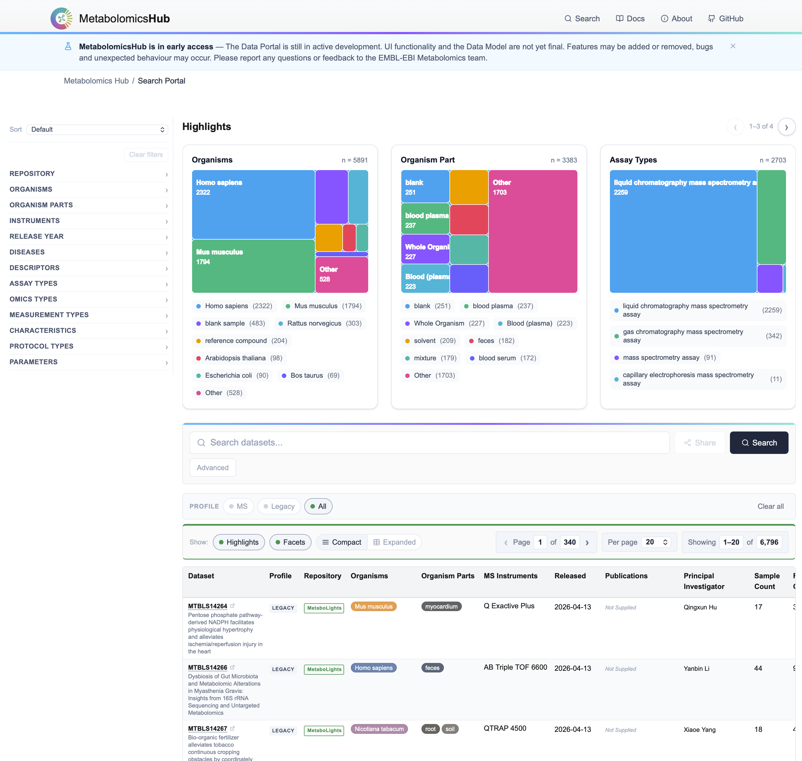
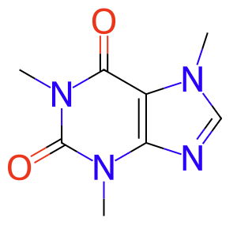
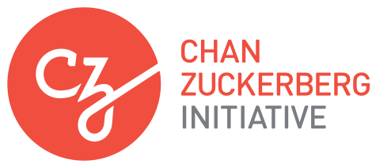

Public metabolomics data are deposited across repositories with divergent metadata conventions, blocking cross-resource discovery, meta-analysis and AI-ready reuse. MetabolomicsHub is a new international consortium building a unified, FAIR-compliant framework for discovery, exchange and reuse of public metabolomics data — delivered through shared standards, a common data model and a centralised portal.

MetaboLights


Public metabolomics datasets are growing rapidly, yet remain fragmented across repositories with divergent metadata conventions. MetabolomicsHub is a new international consortium building a unified, FAIR-compliant (Findable, Accessible, Interoperable, Reusable) infrastructure for the discovery, exchange and reuse of public metabolomics data.
Modelled on ProteomeXchange and the INSDC, the consortium brings together major repositories as a starting point, and partners with researchers, journals, funders and technology vendors.
Funded by the Chan Zuckerberg Initiative as a 30-month programme (Dec 2024 – May 2027), MetabolomicsHub launches (GC/LC-)MS-first. Later releases will extend to NMR and MS imaging, with planned support for Universal Spectrum Identifiers (USIs) — per-spectrum traceability — and the mzTab-M reporting format.
The Central Search Portal delivers cross-repository discovery across 6,500+ legacy public metabolomics datasets, with all post-release MS depositions captured as fully-harmonised MHD profiles. Raw data, result files and MHD files remain hosted by the source repositories.

Repository, organism, organism part, instrument, release year, disease, assay & measurement type — with an advanced composer for AND/OR/NOT multi-clause queries.
Treemap previews summarise the top organisms, organism parts and assay types for any query — faster scoping for meta-analyses.
Public Search API and dataset-announcement feed enable LLM-ready integration, automation and external indexing — every record downloadable as an MHD Common Data Model File (JSON).
The MHD Common Data Model is a versioned graph schema that represents a metabolomics study as typed nodes —
Subject, Sample, Study, Protocol, Assay and other entities — linked by named relationships, with parameters bound to
controlled-vocabulary values and types. Native ISA-Tab (MetaboLights); mwTab (Workbench); JSON (GNPS/MassIVE) study
metadata are converted into two artefacts: an extensible MHD Common Data Model File (graph JSON) and a lighter-weight
MHD Announcement File. Every controlled-vocabulary reference carries a
source/accession/name triple, validated by JSON
Schema and resolved via the OLS4 API.
As part of the MetabolomicsHub infrastructure, an automatic pipeline for the enrichment of compound identifiers, descriptors & database cross-referencing is in development. The pipeline ingests the compound metadata provided in the source repository and fills missing values based on lookups from various online resources, with ChEBI identifiers and standardised RefMet name and identifier as key outputs.

Cross-repository metadata reconciliation led to an expansion of the PSI-MS Controlled Vocabulary (PSI-MS-CV): chromatography hardware was not previously included (beyond a handful of placeholders), and non-US-vendor mass spectrometers were under-represented. Gaps were identified from cross-repository mapping, drafted with AI-assisted definition generation (iterative web search and summarisation), edited into the OBO file via Python, and submitted as GitHub pull requests.
We have contributed +220 new instrument terms (118 MS/GC-MS; 83 LC; 19 GC, Fig. 4) plus supporting hierarchies, with a further 10 terms added or under review at EDAM, ChEBI and CHEMINF. Enriched terms feed back upstream, so every downstream consumer — mzML, ProteoWizard, OpenMS, MZmine, XCMS, MassBank, etc. — benefits from a single shared vocabulary.
A central search portal for cross-repository discovery indexes 6,500+ legacy datasets — with all post-release MS depositions captured as fully-harmonised MHD profiles — underpinned by a graph Common Data Model bound to authoritative ontologies and an automated chemical-identifier enrichment pipeline. Contributing +220 terms to PSI-MS-CV and committing to open standards (mzTab-M, USIs), the consortium strengthens the shared FAIR foundation for the metabolomics community.

HUPO-PSI Spring Meeting, Rome